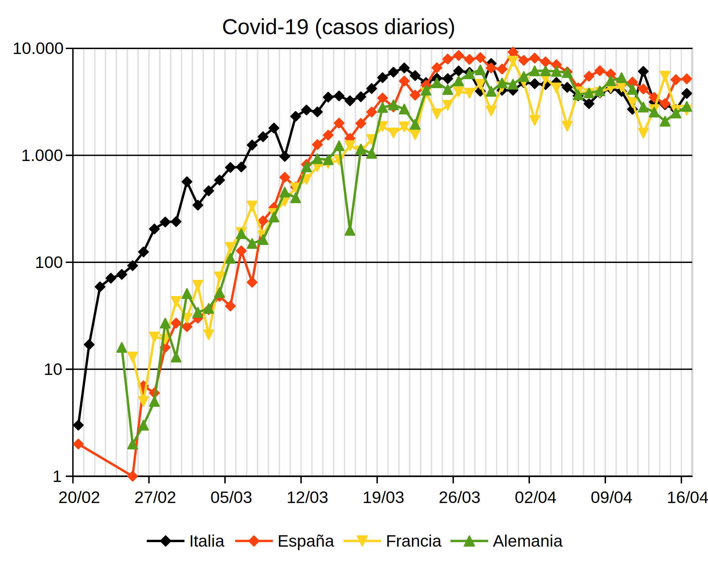
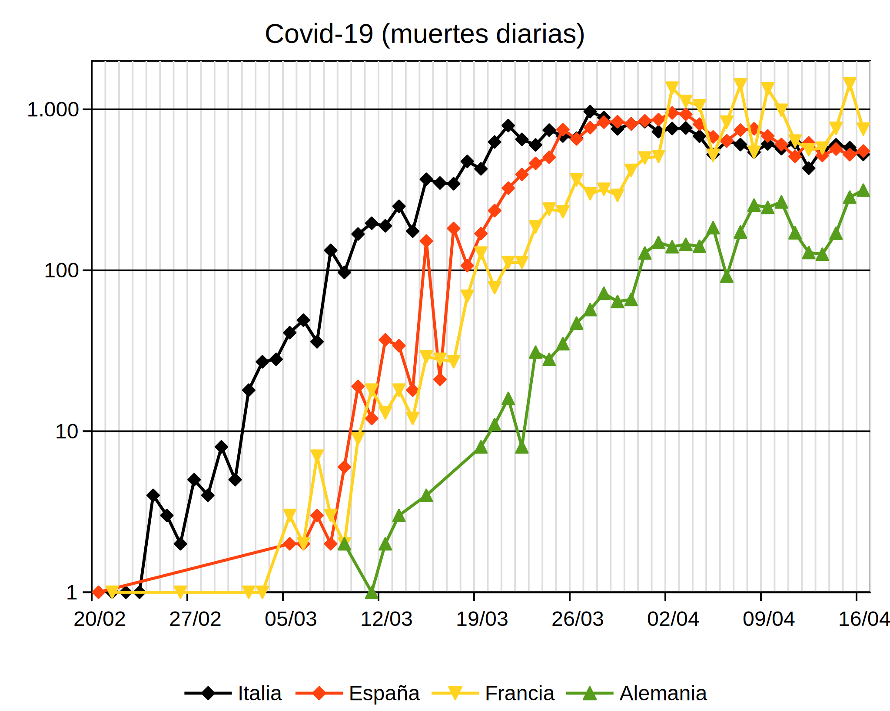
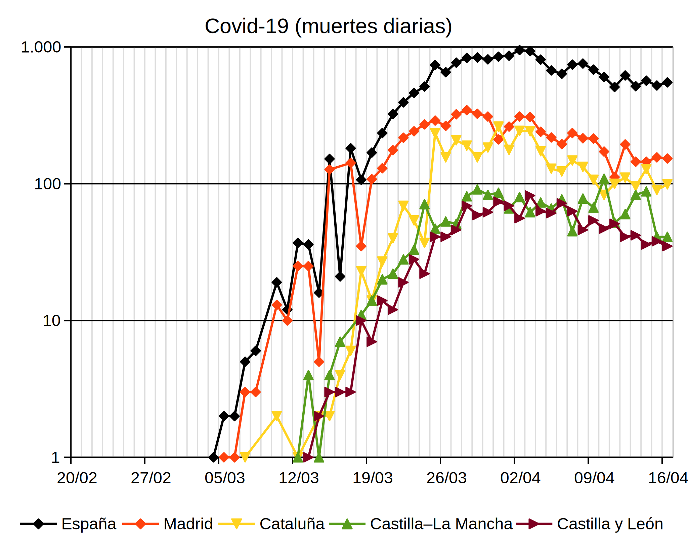
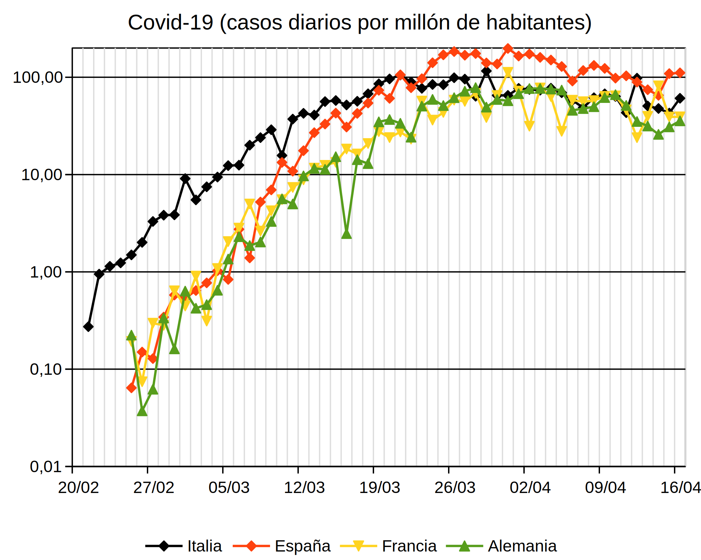
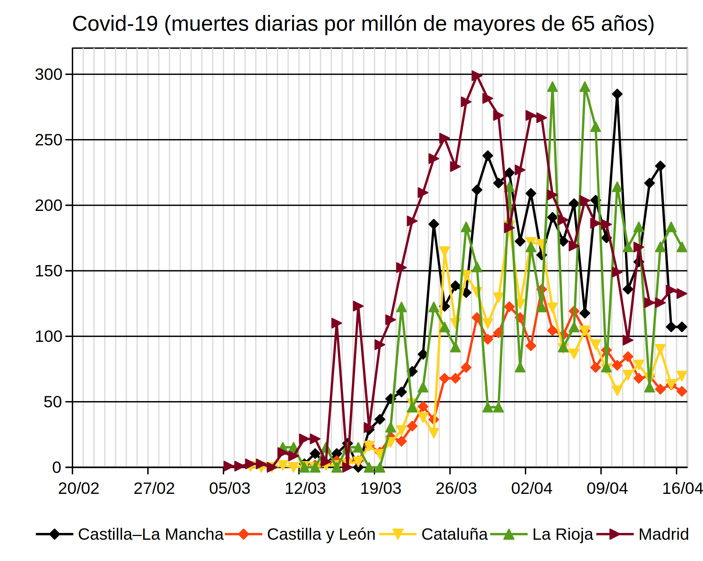
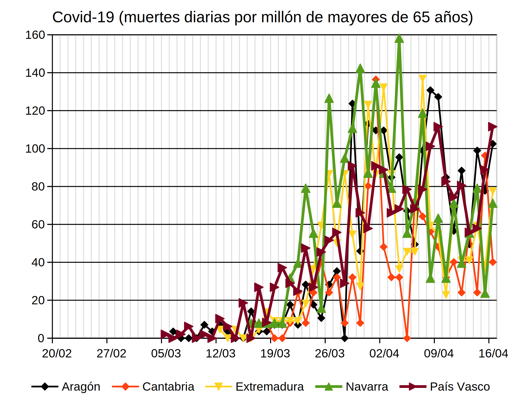
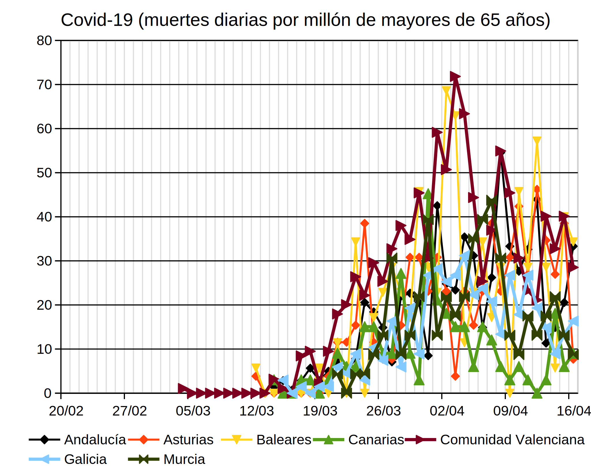
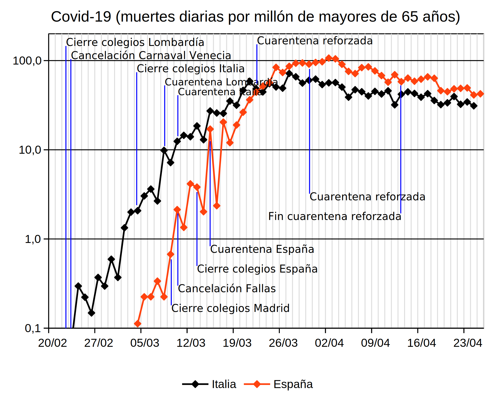

La lección Evolución del hardware muestra varios ejemplos de evolución exponencial "artificial", es decir, producida de forma intencionada (en ese caso por la industria informática) y que acaba inevitablemente llegando a sus límites físicos. En esta lección se muestra un ejemplo de evolución exponencial "natural", en el que esperamos que la intervención humana adelante su también inevitable final.
Se trata de la evolución de la epidemia del coronavirus Covid-19 que estamos sufriendo actualmente. Esta página no pretende ofrecer información sobre la enfermedad, ni sobre su tratamiento, ni predicciones sobre su evolución futura. Simplemente pretende mostrar los datos oficiales de una forma comprensible y analizable gracias a la representación logarítmica de los datos oficiales.
La epidemia de Covid-19 está ocurriendo ya en la mayoría de países, pero no simultáneamente, por lo que las muertes empiezan a producirse, aumentar, estabilizarse y reducirse en momentos diferentes en cada uno de los países afectados. Esa situación también ocurre en el interior de cada país, en el que cada región sufre la expansión de la epidemia con desfases y alcances distintos.
La cuarentena estricta de la población se está imponiendo como única medida a nuestra disposición ante la expansión de la epidemia. Pero hay que tener en cuenta que algunas regiones deberán imponer la cuarentena porque regiones vecinas la necesitan y posteriormente otras regiones deberán mantener la cuarentena porque regiones vecinas seguirán necesitándola. Este hecho afectará inevitablemente a la duración de las cuarentenas.
 Esta página se elabora a partir de las cifras oficiales, que parecen subestimar los datos reales, especialmente en lo relacionado con el número de muertes.
Esta página se elabora a partir de las cifras oficiales, que parecen subestimar los datos reales, especialmente en lo relacionado con el número de muertes.
Notas:
Las gráficas siguientes muestran la evolución de los casos de afectados y muertes por Covid-19, día a día o acumulados, en algunos países o en algunas Comunidades Autónomas españolas. Estas gráficas utilizan los datos globales, sin tener cuenta el tamaño de la población de cada país o comunidad autonóma española.
Las gráficas siguientes muestran el número diario y acumulado de afectados por Covid-19 en Italia, España, Francia y Alemania:


Las gráficas siguientes muestran el número diario y acumulado de muertes por Covid-19 en Italia, España, Francia y Alemania:


Las gráficas siguientes muestran el número diario y acumulado de muertes por Covid-19 en las Comunidades Autónomas españolas más afectadas:


La gráfica siguiente muestra en porcentaje el número total de muertes declaradas por Covid-19 en las comunidades autónomas:


Las gráficas siguientes muestran la evolución de los casos de afectados y muertes por Covid-19, día a día o acumulados, en algunos países o en algunas Comunidades Autónomas españolas. Estas gráficas ajustan los datos al tamaño de la población de cada país o comunidad autonóma española.
Para facilitar la comparación de la situación entre países o comunidades autónomas es conveniente tener en cuenta la población de cada uno de ellos. Puesto que la enfermedad ataca a gran parte de la población mientras que las muertes se ceban en los más mayores, en las gráficas siguientes el número de afectados se ajusta a la población total del país o comunidad autónoma y el número de muertes se ajusta a la población total de mayores de 65 años del país o comunidad autónoma. Los datos de población utilizados son los de 2018 en todos los casos.
Las gráficas siguientes muestran el número diario y acumulado de afectados por Covid-19 en Italia, España, Francia y Alemania:


Las gráficas siguientes muestran el número diario y acumulado de muertes por Covid-19 en Italia, España, Francia y Alemania:


Las gráficas siguientes muestran el número diario y acumulado de muertes por Covid-19 en las Comunidades Autónomas españolas más afectadas:


Las gráficas siguientes muestran la evolución de muertes por Covid-19, día a día, en las diferentes Comunidades Autónomas. Estas gráficas ajustan los datos al tamaño de la población de cada país o comunidad autonóma española y utilizan una escala lineal puesto que los valores a representar son similares.
Nota: He intentado agrupar las comunidades por similitudes en su situación, pero las oscilaciones en los datos diarios son tan grandes que algunas comundiades podrían estar situadas en un grupo u otro dependiendo del día.
El primer grupo de Comunidades Autónomas sería el formado por aquellas en las que según los datos oficiales se han superado los 100 muertos diarios por millón de habitantes mayor de 65 años y que parecen haber alcanzado el pico, o más bien la meseta, de la epidemia:

El segundo grupo de Comunidades Autónomas sería el formado por aquellas que según los datos oficiales no parecen haber alcanzado todavía su pico o meseta de la epidemia pero que han superado los 50 muertos diarios por millón de habitantes mayor de 65 años:

El tercer grupo de Comunidades Autónomas sería el formado por aquellas en las que según los datos oficiales la epidemia está todavía en una fase incipiente y todavía no se han superado los 50 muertos diarios por millón de habitantes mayor de 65 años de una forma clara:

La gráfica siguiente muestra el porcentaje de muertes con respecto al número de casos declarados por Covid-19 en Italia, España, Francia y Alemania en las últimas semanas. En este caso, no es necesario corregir los datos con respecto a la población y los datos pueden compararse directamente.
En este caso la relación no es exponencial, por lo que la escala vertical no es logarítmica, sino lineal.

Nota: España declaró la primera muerte por Covid-19 el 4 de marzo, aunque se trataba de un paciente fallecido el 13 de febrero. Para la elaboración de la gráfica anterior se ha considerado ese caso desde el 26 de febrero, el día siguiente a la aparición oficial de infectados por Covid-19.
Las autoridades sanitarias están difundiendo desde hace semanas las medidas sanitarias básicas que todos debemos seguir ante la evolución de la enfermedad. Pero también se están tomando medidas importantes de aislamiento y control de movimientos de la población que están alterando y van a alterar nuestra vida diaria de forma radical. Esperemos que sean necesarias durante la menor cantidad de tiempo.
La gráfica siguiente muestra las principales medidas en Italia y en España, indicadas sobre el gráfico de muertes por Covid-19 por cada millón de habitantes mayor de 65 años ya comentado anteriormente.


Estas fueron las evaluaciones de riesgo publicadas en los meses de enero y febrero de 2020 en los boletines informativos del Ministerio de Sanidad (cita literal):
El Covid-19 es un desafío tremendo a nuestros sistemas de salud. En este apartado se pretende comparar el número de muertes por Covid-19 con los muertos producidos por otras enfermedades.
La gráfica siguiente muestra el número de muertes por Covid-19 en España en diferentes fechas, comparándolo con el total de muertes de mayores de 65 años ocurridas en 2018 (último año para el que en INE ofrece datos). Las enfermedades están agrupadas por categorías.
Para mostrar la evolución del Covid-19, se muestra el número de muertes por Covid-19 en diferentes fechas (lunes posteriores al 1 de marzo y el último día para los que se dispone de datos oficiales). En este caso la escala horizontal es logarítmica. De esta manera se pueden representar tanto números grandes como números pequeños.

Estas gráficas sugieren muchas preguntas. Algunas de ellas se dejan aquí para la reflexión del lector:
Los datos utilizados para la elaboración de las gráficas incluidas en esta página se han extraido de los boletines informativos denominados Actualización y publicados por Centro de Coordinación de Alertas y Emergencias Sanitarias, dependiente del Ministerio de Sanidad.
Los datos de casos y muertes por Covid-19 en España de los días en los que el Ministerio no publicó datos, así como los datos de Italia, Francia y Alemania, se han extraido de la Wikipedia y proceden a su vez de fuentes públicas y verificables. Espero no haber cometido errores traspasando los datos ni efectuando los cálculos, porque no es mi intención manipular los datos para demostrar ninguna tesis.
Los datos de otras enfermedades se encuentran disponibles en el Instituto Nacional de Estadística.
Puede descargar todos los datos y las gráficas en forma de hoja de cálculo de LibreOffice: covid.ods.
El Instituto de Salud Carlos III está publicando unos Informes sobre la situación de COVID-19 en España.
Nota: Los informes 1 y 2 no parecen estar disponibles en Internet.
El Instituto de Salud Carlos III está publicando unos informes sobre la mortalidad por todas las causas, basados en la información proporcionada por los Registros Civiles y denominados Informes MoMo 2020. Aunque estos informes permiten otra estimación independiente del número de muertes producidas por Covid-19, los informes hacen constar el retraso que se está produciendo en los registros civiles desde mediados de marzo.
Estos son los informes MoMo que he podido localizar. Al no estar numerados no puedo saber si falta alguno: